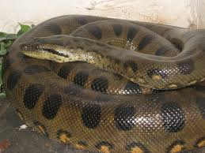
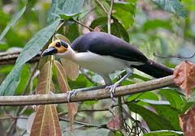
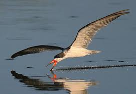
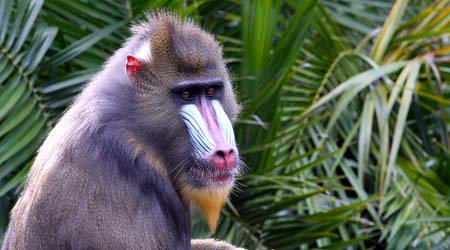
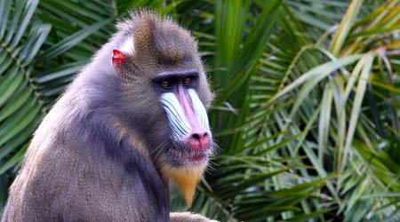

Congo is mainly covered by rainforest as there is 5 million square meters of dense tropical rain forest.There is a greater concentration of animals than anywhere else in Africa.Here are a few of the animals from Congo:
- Stingless bees have to work very hard because theyre is'nt much flowers in the thick rainforest and each bee has to visit at least a thousand flowers each day.The bees honey is so precious that the bees keep the honey hidden in the bark of trees.
- Unfortunately for the bees, the chimpanzees love honey.Chimps are also very smart but they arent born knowing how to use tools.They're taught it by watching their parents.
- If you dont like snakes I recomend not visiting the Congo rainforest.The rainforest's largest predator is the female Rock Python.She's 5 meteres long,100 kilos and has 400 muscles which she uses to crush animals.When her babies are just hatched they can be over sixty centimeters long. Here's some good news for people who don't like snakes.Only 1 in 100 babies ae likely to reach adult hood. 
- Picathartes birds are personally my favourite type of animal that I wrote about.The Picathartes were around 44 million years ago and are still around today.That's nearly as long ago as dinosaurs, as they were around 230 to 65 million years ago. When the Picatharties are trying to mate the male displays(e.g.dances.) to the female. The only place where Picatharties will make their nest is on over-hanging boulders as it protects the nest from rain. 
- Scimmers are also birds.However unlike Picatharties, Scimmers travel in groups.Scimmers find a place to nest and lay their eggs, then they leave when the flood comes.Baby Scimmers must learn to fly before the flood comes otherwise they die.Scimmers diet is made mainly of fish which is why their lower beak is bigger than their upper beak so that they can grab the fish while they are in the air.They do it by dipping their lower beak into the water and snapping it shut on fish.


These are a few of the amazing animals that live in the congo rainforest.

 
